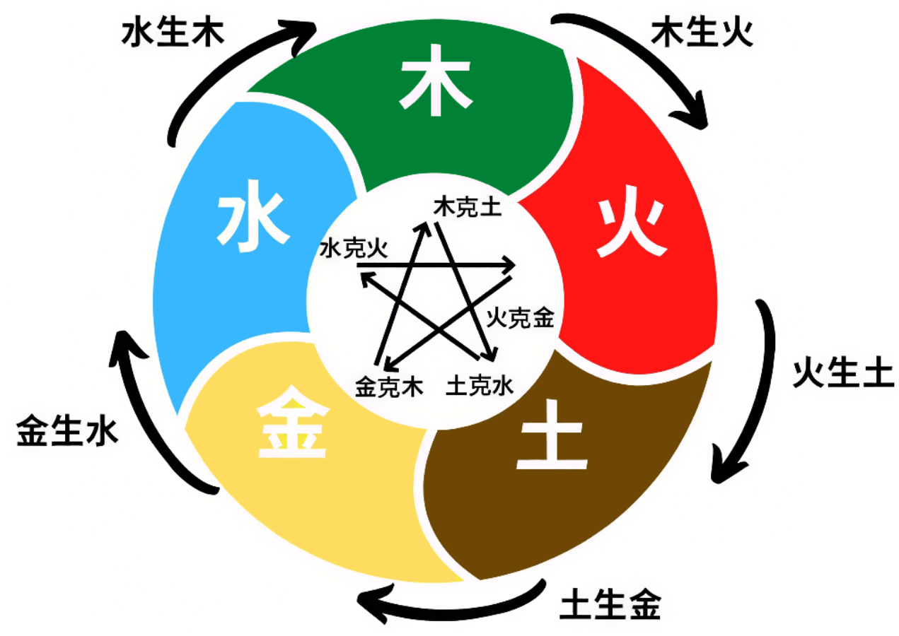

八字推命
八字推命学习笔记
八字推命
天干地支
天干
| 天干 | 甲 | 乙 | 丙 | 丁 | 戊 | 己 | 庚 | 辛 | 壬 | 癸 |
|---|---|---|---|---|---|---|---|---|---|---|
| 阴阳 | ||||||||||
| 五行 | 木 | 木 | 火 | 火 | 土 | 土 | 金 | 金 | 水 | 水 |
| 方位 | 东 | 东 | 南 | 南 | 中 | 中 | 西 | 西 | 北 | 北 |
| 属性 | 栋梁之木 | 花果之木 | 太阳之火 | 灯烛之火 | 城墙之土 | 田园之土 | 斧钺之金 | 首饰之金 | 江河之水 | 雨露之水 |
地支
| 地支 | 子 | 丑 | 寅 | 卯 | 辰 | 巳 | 午 | 未 | 申 | 酉 | 戌 | 亥 |
|---|---|---|---|---|---|---|---|---|---|---|---|---|
| 生肖 | 鼠 | 牛 | 虎 | 兔 | 龙 | 蛇 | 马 | 羊 | 猴 | 鸡 | 狗 | 猪 |
| 阴阳 | ||||||||||||
| 五行 |
用十天干与十二地支按阳干配阳支，阴干配阴支的顺序两两相配，从甲子到癸亥，共六十个组合，称六十甲子
公元后换算
公元4年是公元后第一个甲子年
天干=（公历年份）/10，所得余数
地支=（公历年份）/12，所得余数
| 公 | 元 | 后 | – | 换 | 算 | 表 | ||||||
|---|---|---|---|---|---|---|---|---|---|---|---|---|
| 天干 | 甲 | 乙 | 丙 | 丁 | 戊 | 己 | 庚 | 辛 | 壬 | 癸 | ||
| 4 | 5 | 6 | 7 | 8 | 9 | 0 | 1 | 2 | 3 | |||
| 地支 | 子 | 丑 | 寅 | 卯 | 辰 | 巳 | 午 | 未 | 申 | 酉 | 戌 | 亥 |
| 4 | 5 | 6 | 7 | 8 | 9 | 10 | 11 | 0 | 1 | 2 | 3 |
那么问题来了：第一个甲子年是按什么推算出来的？
四柱八字
年月日时四柱分别两个字，对应天干地支，共为八字。在命理分析中，天干代表空间的量度，地支代表时间的量度。
| 年柱 | 月柱 | 日柱 | 时柱 | |
|---|---|---|---|---|
| 天干 | 年干 | 月干 | 日干 | 时干 |
| 地支 | 年支 | 月支 | 日支 | 时支 |
年柱
月柱
日柱
时柱
例子
以1998年10月1日下午3点出生的男性(乾造)为例：
| 乾造 | 年柱 | 月柱 | 日柱 | 时柱 |
|---|---|---|---|---|
| 天干 | 戊 | 辛 | 辛 | 丙 |
| 地支 | 寅 | 酉 | 巳 | 申 |
四柱八字即为： 戊寅 辛酉 辛巳 丙申
五行
《尚书·洪范》：五行，一日水，二日火，三日木，四日金，五日土。水曰润下，火曰炎上，木曰曲直，金曰从革，土爰稼穑。
先天五行顺序：木、火、土、金、水，概取自河图
后天五行顺序：金、木、水、火、土，概取自洛书
| 木 | 火 | 土 | 金 | 水 | |
|---|---|---|---|---|---|
| 特性 | 生发、条达 | 炎热，向上 | 长养、化育 | 清静、收杀 | 寒冷、向下 |
| 阳干 | 甲 | 丙 | 戊 | 庚 | 壬 |
| 阴干 | 乙 | 丁 | 己 | 辛 | 癸 |
| 阳支 | 寅 | 午 | 辰、戌 | 申 | 子 |
| 阴支 | 卯 | 巳 | 丑、未 | 酉 | 亥 |
例子
以1998年10月1日下午3点出生的男性(乾造)为例：
| 乾造 | 年柱 | 月柱 | 日柱 | 时柱 |
|---|---|---|---|---|
| 天干-五行 | 戊-阳土 | 辛-阴金 | 辛-阴金 | 丙-阳火 |
| 地支-五行 | 寅-阳木 | 酉-阴金 | 巳-阴火 | 申-阳金 |
四柱八字即为： 戊寅 辛酉 辛巳 丙申
对应五行即为： 土木 金金 金火 火金
十神
八字论命， 以干支阴阳五行的生克制化、刑冲合害为基础，以日柱的日干与其他各干支的五种关系，细分阴阳为十神，同性为偏，异性为正。十神侧重人事分析，五行侧重个人禀气分量轻重，两者相辅相成。
十神关系表
| 日元\我 | |||||
|---|---|---|---|---|---|
| 关系 | 生我 | 克我 | 我生 | 同我 | 我克 |
| 十神 | 印星 | 官杀 | 食伤 | 比劫 | 财星 |
| 异性 | 正印 | 正官 | 伤官 | 劫财 | 正财 |
| 同性 | 偏印\枭神 | 七杀 | 食神 | 比肩 | 偏财 |
天干十神关系表
| 天干\日主 | 甲 - 阳木 | 乙 - 阴木 | 丙 - 阳火 | 丁 - 阴火 | 戊 - 阳土 | 己 - 阴土 | 庚 - 阳金 | 辛 - 阴金 | 壬 - 阳水 | 癸 - 阴水 |
|---|---|---|---|---|---|---|---|---|---|---|
| 甲 - 阳木 | 比肩 | 劫财 | 偏印 | 正印 | 偏官 | 正官 | 偏财 | 正财 | 食神 | 伤官 |
| 乙 - 阴木 | 劫财 | 比肩 | 正印 | 偏印 | 正官 | 偏官 | 正财 | 偏财 | 伤官 | 食神 |
| 丙 - 阳火 | 食神 | 伤官 | 比肩 | 劫财 | 偏印 | 正印 | 偏官 | 正官 | 偏财 | 正财 |
| 丁 - 阴火 | 伤官 | 食神 | 劫财 | 比肩 | 正印 | 偏印 | 正官 | 偏官 | 正财 | 偏财 |
| 戊 - 阳土 | 偏财 | 正财 | 食神 | 伤官 | 比肩 | 劫财 | 偏印 | 正印 | 偏官 | 正官 |
| 己 - 阴土 | 正财 | 偏财 | 伤官 | 食神 | 劫财 | 比肩 | 正印 | 偏印 | 正官 | 偏官 |
| 庚 - 阳金 | 偏官 | 正官 | 偏财 | 正财 | 食神 | 伤官 | 比肩 | 劫财 | 偏印 | 正印 |
| 辛 - 阴金 | 正官 | 偏官 | 正财 | 偏财 | 伤官 | 食神 | 劫财 | 比肩 | 正印 | 偏印 |
| 壬 - 阳水 | 偏印 | 正印 | 偏官 | 正官 | 偏财 | 正财 | 食神 | 伤官 | 比肩 | 劫财 |
| 癸 - 阴水 | 正印 | 偏印 | 正官 | 偏官 | 正财 | 偏财 | 伤官 | 食神 | 劫财 | 比肩 |
例子
以1998年10月1日下午3点出生的男性(乾造)为例：
| 乾造 | 年柱 | 月柱 | 日柱 | 时柱 |
|---|---|---|---|---|
| 天干-五行-十神 | 戊-阳土-正印 | 辛-阴金-比肩 | 辛-阴金-日主 | 丙-阳火-正官 |
| 地支-五行-十神 | 寅-阳木 | 酉-阴金 | 巳-阴火 | 申-阳金 |
四柱八字即为： 戊寅 辛酉 辛巳 丙申
对应五行即为： 土木 金金 金火 火金
天干十神即为： 正印 比肩 日主 正官
地支
地支三合三会图

- 亥子丑，三会水，北方；
- 寅卯辰，三会木，东方；
- 巳午未，三会火，南方；
- 申酉戌，三会金，西方；
申子辰，三合水；
亥卯未，三合木；
寅午戌，三合火；
巳酉丑，三合金；
地支藏干
子中单癸水,丑藏己癸辛,寅中甲丙戊,卯中乙木藏,辰藏戊乙癸,巳藏丙戊庚,午中丁己土,未中己丁乙,申里庚壬戊,酉中独辛金,戌里戊辛丁,亥中壬甲藏。
| 地支 | 子 | 丑 | 寅 | 卯 | 辰 | 巳 | 午 | 未 | 申 | 酉 | 戌 | 亥 | |
|---|---|---|---|---|---|---|---|---|---|---|---|---|---|
| 余气 | 癸水 | 戊土 | 乙木 | 戊土 | 丁火 | 戊土 | 辛金 | ||||||
| 藏干 | 中气 | 辛金 | 丙火 | 癸水 | 庚金 | 己土 | 乙木 | 壬水 | 丁火 | 甲木 | |||
| 本气 | 癸水 | 己土 | 甲木 | 乙木 | 戊土 | 丙火 | 丁火 | 己土 | 庚金 | 辛金 | 戊土 | 壬水 |
余气乃上一支的“本气”五行的延伸
中气乃该支三合合化之五行
本气乃该支相同之五行
- 申藏壬水，子辰藏癸水，所以，申子辰三合水。
- 亥藏甲木，卯未藏乙木，所以，亥卯未三合木。
- 寅藏丙火，午戌藏丁火，所以，寅午戌三合火。
- 巳藏庚金，酉丑藏辛金，所以，巳酉丑三合金。
地支十神关系表
| 地 | 支 | |||||||||||||||||||||||||||
|---|---|---|---|---|---|---|---|---|---|---|---|---|---|---|---|---|---|---|---|---|---|---|---|---|---|---|---|---|
| 日主 | 子 | 丑 | 丑 | 丑 | 寅 | 寅 | 寅 | 卯 | 辰 | 辰 | 辰 | 巳 | 巳 | 巳 | 午 | 午 | 未 | 未 | 未 | 申 | 申 | 申 | 酉 | 戌 | 戌 | 戌 | 亥 | 亥 |
| 癸 | 癸 | 己 | 辛 | 丙 | 甲 | 戊 | 乙 | 乙 | 戊 | 癸 | 戊 | 丙 | 庚 | 丁 | 己 | 乙 | 己 | 丁 | 戊 | 庚 | 壬 | 辛 | 辛 | 戊 | 丁 | 壬 | 甲 | |
| 甲日 | 正印 | 正印 | 正财 | 正官 | 食神 | 比肩 | 偏财 | 劫财 | 劫财 | 偏财 | 正印 | 偏财 | 食神 | 七杀 | 伤官 | 正财 | 劫财 | 正财 | 伤官 | 偏财 | 七杀 | 偏印 | 正官 | 正官 | 偏官 | 伤官 | 偏印 | 比肩 |
| 乙日 | 偏印 | 偏印 | 偏财 | 七杀 | 伤官 | 劫财 | 正财 | 比肩 | 比肩 | 正财 | 偏印 | 正财 | 伤官 | 正官 | 食神 | 偏财 | 比肩 | 偏财 | 食神 | 正财 | 正官 | 正印 | 七杀 | 七杀 | 正财 | 食神 | 正印 | 劫财 |
| 丙日 | 正官 | 正官 | 伤官 | 正财 | 比肩 | 偏印 | 食神 | 正印 | 正印 | 食神 | 正官 | 食神 | 比肩 | 偏财 | 劫财 | 伤官 | 正印 | 伤官 | 劫财 | 食神 | 偏财 | 七杀 | 正财 | 正财 | 食神 | 劫财 | 七杀 | 偏印 |
| 丁日 | 七杀 | 七杀 | 食神 | 偏财 | 劫财 | 正印 | 伤官 | 偏印 | 偏印 | 伤官 | 七杀 | 伤官 | 劫财 | 正财 | 比肩 | 食神 | 偏印 | 食神 | 比肩 | 伤官 | 正财 | 正官 | 偏财 | 偏财 | 伤官 | 比肩 | 正官 | 正印 |
| 戊日 | 正财 | 正财 | 劫财 | 伤官 | 偏印 | 七杀 | 比肩 | 正官 | 正官 | 比肩 | 正财 | 比肩 | 偏印 | 食神 | 正印 | 劫财 | 正官 | 劫财 | 正印 | 比肩 | 食神 | 偏财 | 伤官 | 伤官 | 比肩 | 正印 | 偏财 | 七杀 |
| 己日 | 偏财 | 偏财 | 比肩 | 食神 | 正印 | 正官 | 劫财 | 七杀 | 七杀 | 劫财 | 偏财 | 劫财 | 正印 | 伤官 | 偏印 | 比肩 | 七杀 | 比肩 | 偏印 | 劫财 | 伤官 | 正财 | 食神 | 食神 | 劫财 | 偏印 | 正财 | 正官 |
| 庚日 | 伤官 | 伤官 | 正印 | 劫财 | 七杀 | 偏财 | 偏印 | 正财 | 正财 | 偏印 | 伤官 | 偏印 | 七杀 | 比肩 | 正官 | 正印 | 正财 | 正印 | 正官 | 偏印 | 比肩 | 食神 | 劫财 | 劫财 | 偏印 | 正官 | 食神 | 偏财 |
| 辛日 | 食神 | 食神 | 偏印 | 比肩 | 正官 | 正财 | 正印 | 偏财 | 偏财 | 正印 | 食神 | 正印 | 正官 | 劫财 | 七杀 | 偏印 | 偏财 | 偏印 | 七杀 | 正印 | 劫财 | 伤官 | 比肩 | 比肩 | 正印 | 七杀 | 伤官 | 正财 |
| 壬日 | 劫财 | 劫财 | 正官 | 正印 | 偏财 | 食神 | 七杀 | 伤官 | 伤官 | 七杀 | 劫财 | 七杀 | 偏财 | 偏印 | 正财 | 正官 | 伤官 | 正官 | 正财 | 七杀 | 偏印 | 比肩 | 正印 | 正印 | 七杀 | 正财 | 比肩 | 食神 |
| 癸日 | 比肩 | 比肩 | 七杀 | 偏印 | 正财 | 伤官 | 正官 | 食神 | 食神 | 正官 | 比肩 | 正官 | 正财 | 正印 | 偏财 | 七杀 | 食神 | 七杀 | 偏财 | 正官 | 正印 | 劫财 | 偏印 | 偏印 | 正官 | 偏财 | 劫财 | 伤官 |
例子
以1998年10月1日下午3点出生的男性(乾造)为例：
| 乾造 | 年柱 | 月柱 | 日柱 | 时柱 |
|---|---|---|---|---|
| 天干-五行-十神 | 戊-阳土-正印 | 辛-阴金-比肩 | 辛-阴金-日主 | 丙-阳火-正官 |
| 地支-五行-十神 | 寅-阳木-正财 | 酉-阴金-比肩 | 巳-阴火-正官 | 申-阳金-劫财 |
四柱八字即为： 戊寅 辛酉 辛巳 丙申
对应五行即为： 土木 金金 金火 火金
天干十神即为： 正印 比肩 日主 正官
地支十神即为： 正财 比肩 正官 劫财
纳音
天干地支六十甲子纳音五行表
| 甲子乙丑【海中金】 | 丙寅丁卯【炉中火】 | 戊辰已巳 【大林木】 |
| 庚午辛未 【路旁土】 | 壬申癸酉 【剑锋金】 | 甲戌乙亥 【山头火】 |
| 丙子丁丑 【漳下水】 | 戊寅已卯 【城头土】 | 庚辰辛巳 【白腊金】 |
| 壬午癸未 【杨柳木】 | 甲申乙酉 【泉中水】 | 丙戌丁亥 【屋上土】 |
| 戊子已丑 【霹雳火】 | 庚寅辛卯 【松柏木】 | 壬辰癸巳 【长流水】 |
| 甲午乙未 【砂石金】 | 丙申丁酉 【山下火】 | 戊戌已亥 【平地木】 |
| 庚子辛丑 【壁上土】 | 壬寅癸卯 【金箔金】 | 甲辰乙巳 【覆灯火】 |
| 丙午丁未 【天河水】 | 戊申已酉 【大驿土】 | 庚戌辛亥 【钗钏金】 |
| 壬子癸丑 【桑柘木】 | 甲寅乙卯 【太溪水】 | 丙辰丁巳 【沙中土】 |
| 戊午已未 【天上火】 | 庚申辛酉 【石榴木】 | 壬戌癸亥 【大海水】 |
例子
以1998年10月1日下午3点出生的男性(乾造)为例：
| 乾造 | 年柱 | 月柱 | 日柱 | 时柱 |
|---|---|---|---|---|
| 天干-五行-十神 | 戊-阳土-正印 | 辛-阴金-比肩 | 辛-阴金-日主 | 丙-阳火-正官 |
| 地支-五行-十神 | 寅-阳木-正财 | 酉-阴金-比肩 | 巳-阴火-正官 | 申-阳金-劫财 |
| 六十甲子纳音 | 戊寅已卯 【城头土】 | 庚申辛酉 【石榴木】 | 庚辰辛巳 【白腊金】 | 申丁酉 【山下火】 |
四柱八字即为： 戊寅 辛酉 辛巳 丙申
对应五行即为： 土木 金金 金火 火金
天干十神即为： 正印 比肩 日主 正官
地支十神即为： 正财 比肩 正官 劫财
对应纳音即为： 城头土 石榴木 白蜡金 山下火